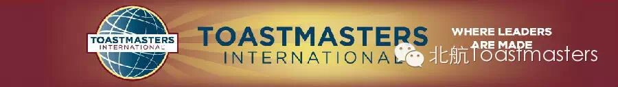
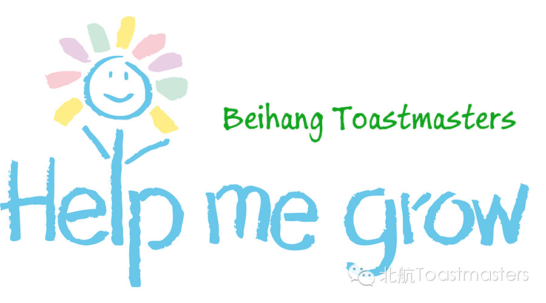
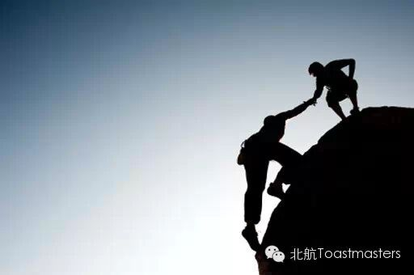
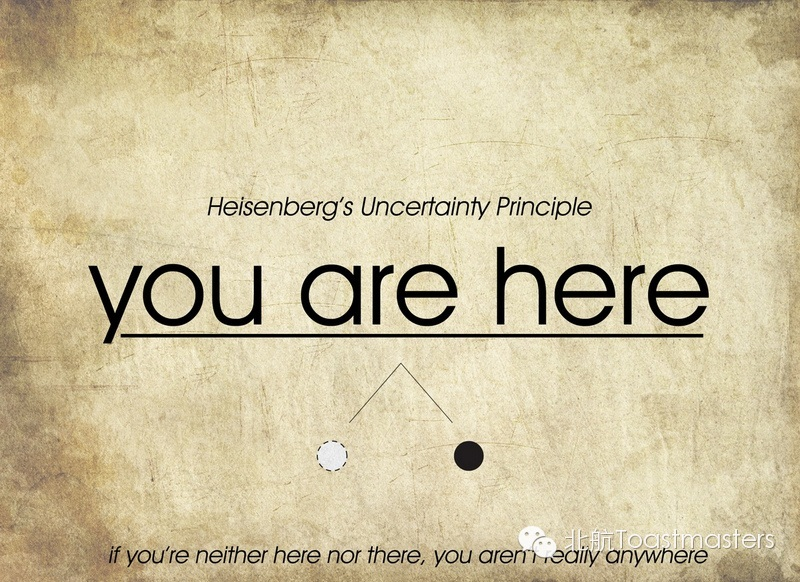

Help Each Other
Time: 19:30-21:30, Friday, Oct. 10th
Venue: Room G221, New Main Building, Beihang University

Toastmaster: Keven
Table Topic Master: Deron

I was always wondering why I came to Toastmaster. At first, the reasons were very simple: just come here to see some beautiful girls. Later, I realize that they've got a stage here. You can stand there, tell your stories, share your thoughts.
However, for me now, I'd like to become evaluator very much. Because it's a great opportunity to listen to the speakers carefully. You may find out their shining points, see their potentials, or get the aspect where they need to improve. When I do this, I compare the speaker with myself a lot, to get to know myself better and to learn something from this speaker.
Toastmaster is a place to help you grow. Be the change you want to see the most! And we would help you to achieve this.
Do you have any experience helping others or being helped by other people? Share with us.
Prepared Speech
The Uncertainty Principle
CC1 Megan

When I firstly saw this title, I mean as a Engineering student, I began to think about Schrodinger's cat. Aha, do you remember The Big Bang Theory? Sheldon would like to mention that cat a lot. Wait a minute... Megan may not be familiar with quantum physics. Oops, wrong way to introduce a speech. Let me do that again.
Megan is a fantastic speaker, who had impressed us with her American-style. What will Megan tell us? It's her first prepared speech. It's our change to get to know her. There are millions of possibilities in our lives. I think the uncertainty of her life will bring us a big surprise. Can't wait to see!
Prepared Speech
Mind Your Labels
CC7 Peter
When a person is labeled as some kind of tag, he would begin to manage his self-impression and try his best to make his own behavior consistent with his labels. In my case, I like labels very much. I would give myself a lot of labels. In my opinion, labels are the symbols of my life experience. When facing a new label, I'm always willing to accept that.
Let's count Peter's labels: The former President of Beihang Toastmasters, An experienced Reader, Beautiful Handwriting, Husky dog named Duoduo..... Recently, he reaches the crossroad in his life. What kind of decisions he will make? Do these labels helpful for his job hunting? Let's find out!
Map
Attention! Our meeting room changed to Room G221, New Main Building, Beihang University (北航新主楼G221房间). And you can phone to Deron for help.
TEL: 180-0125-3933

If you hesitate to come our meeting, I strongly encourage you to have a try. Change yourself, be a better person and make your own decisions. If you can make it, you would never regret!
https://mp.weixin.qq.com/s/I7avg_N3Hfc8-jzVWB9P0A
本页为抢救式本地归档，图文已永久保存。